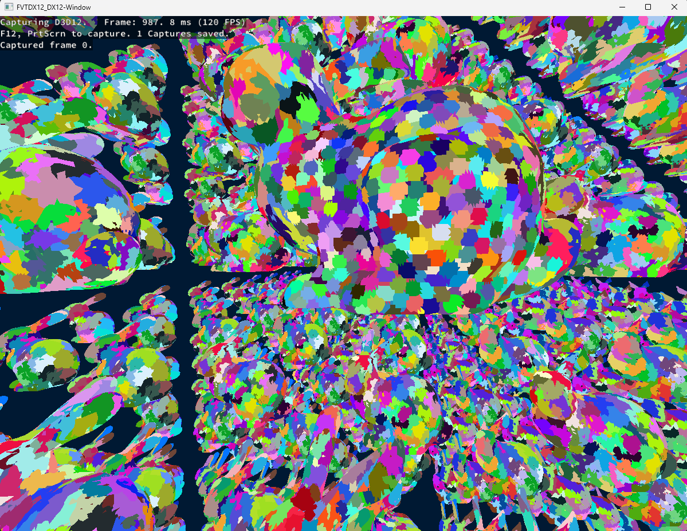
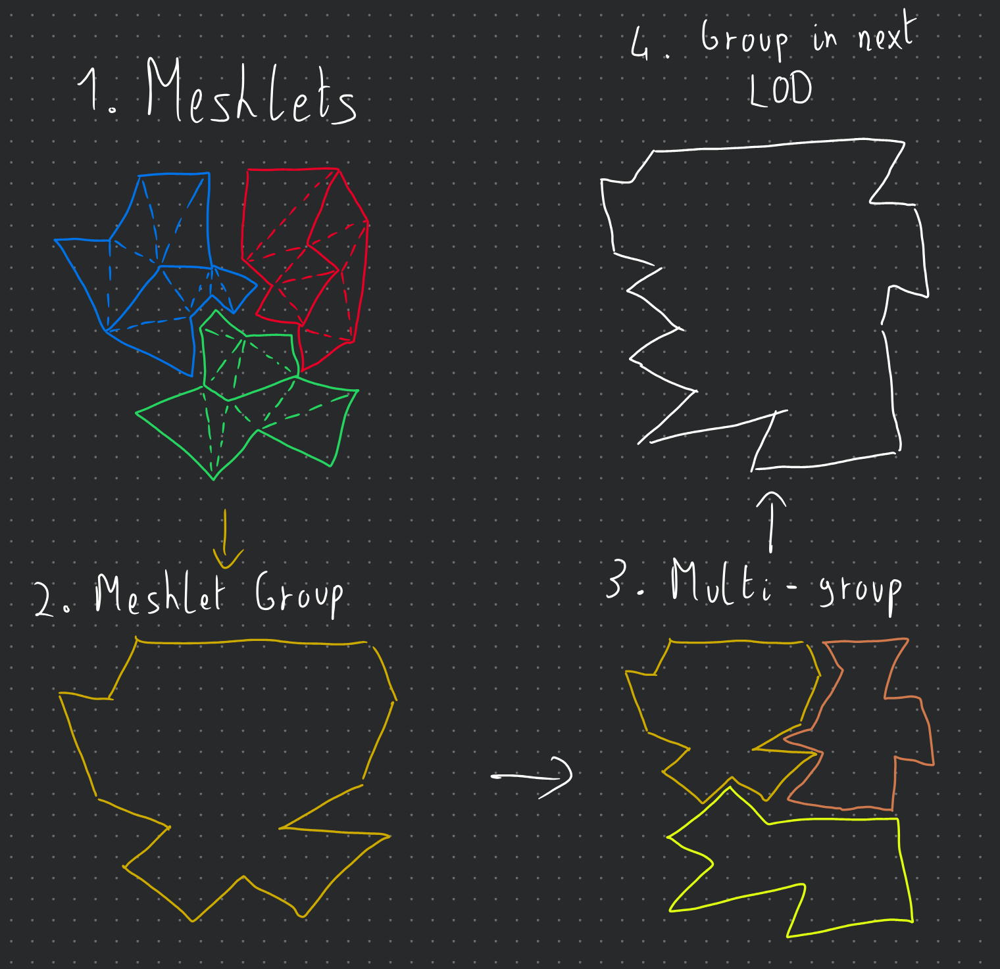
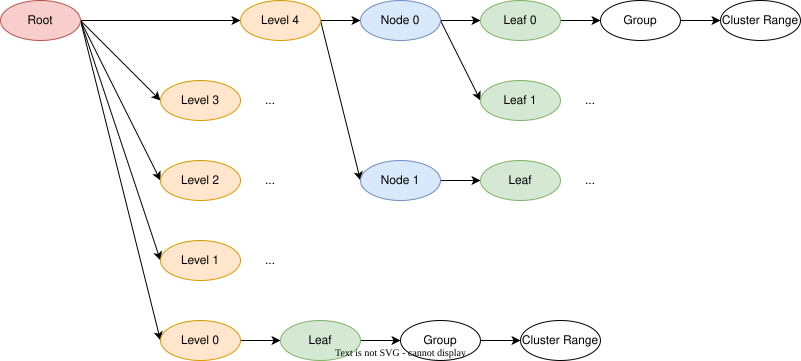
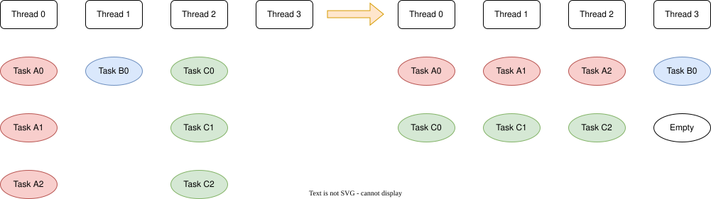
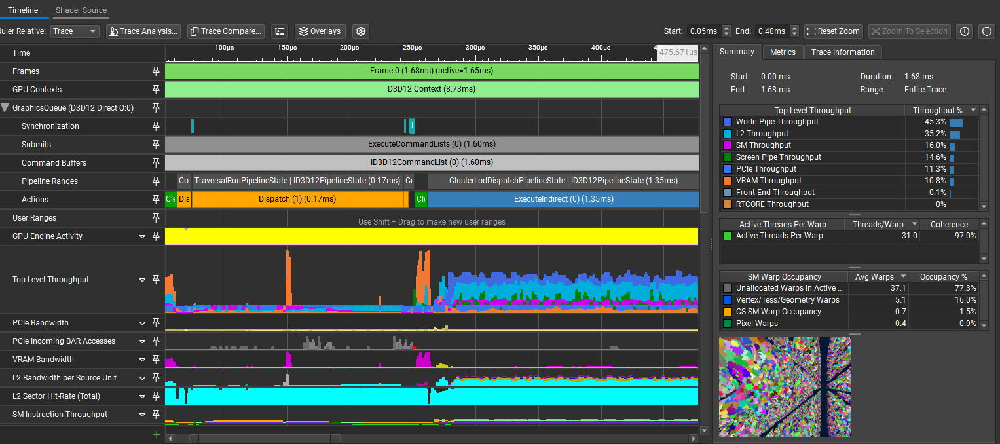

Nanite-Style Hierarchical Meshlet LODs 101

Hello, I’d like to share with you some insights that I gained while trying to implement a Nanite-style hierarchical cluster or meshlet LOD system as a “side quest” to a course project in this article. This project is hosted on GitHub, and you can find the code here.
First of all, big disclaimer, the objective of the course project was to just understand how the DirectX 12 graphics API works as compared to Vulkan, which was taught in previous courses. This had a simple forward renderer as its base project, provided by the course instructor. This was implemented as a single-file implementation to facilitate the comparison between the Vulkan and DirectX 12 implementations. Everything that I’ve implemented for the cluster LOD system was done in the same file as the DirectX 12 renderer, and no implementation was done in the Vulkan renderer, as our course project targeted only DirectX 12 (and I didn’t have enough time to implement it in Vulkan as well 😅). All of this to say, please, do take the code structure with a grain (or more like a handful) of salt, as I know that it is really not adapted for production.
Also, this project was heavily inspired by NVIDIA’s RTX Mega Geometry sample and, more specifically, the vk_lod_clusters repo.
As a final note, I did develop this project with only NVIDIA GPUs in mind since I don't have any machines with AMD or Intel GPUs to test on. And since I'm using mesh shaders, they can only run on RTX 2000 series GPUs or higher. So, I cannot guarantee that it will work on other GPUs, but I would be happy to receive any feedback. 🙂
With that out of the way, let’s start with a quick introduction.
Introduction
The main motivation behind this project, at least in essence for my course, was just to mess around with mesh shaders so that we could fiddle with DirectX 12 while showing our instructor that we understood what we are doing. Since I already have some experience with DirectX 12 and mesh shaders in Vulkan from my own toy graphics engine, and since the course had a pretty vague project description, I decided to branch out a bit to try to implement something that I was always curious about, which was how UE5’s Nanite system works under the hood. For those interested in every single aspect of the Nanite system, I highly recommend reading the paper Nanite: A Deep Dive from the SIGGRAPH 2021 presentations.
In this project, since I didn't have much time, I decided to focus only on one aspect of the Nanite system, which is the hierarchical cluster LOD system. We will call it the HCLOD for short. I will talk mainly about 2 things: the CPU pre-processing step of the geometry to create the HCLODs and the GPU side implementation to choose which LOD to render. As for DirectX12 commands, since it's relatively easy to do, I'll probably mention it quickly while talking about the GPU implementation.
To better follow what I'm going to talk about in this post, I'd highly suggest checking out the repository of the project and looking at the code while reading.
CPU Pre-processing
The first step to creating the HCLODs is to pre-process the geometry on the CPU. The main idea behind it is to cut down a geometry into smaller pieces containing fewer triangles. Since I'm using mesh shaders for the rendering part, it's better to have clusters of maximum 256 triangles/vertices since that's a hard limit triangles/vertices output for DirectX 12. The clustering and hierarchy creation are done in the ImportMeshLod function of the mainDX12.cpp file.
Mesh Cluster Generation
To do this, since I didn't have much time, I've decided to use the meshoptimizer, which has a pretty good implementation of a cluster builder. This kind of cluster generation algorithm is in and of itself a pretty interesting topic. If you're interested in how it works, I'd recommend this paper that compares multiple vertex cluster generation algorithms.
So, meshoptimizer's library comes equipped with some cluster builder functions such as meshopt_buildMeshletsBound, meshopt_buildMeshlets, and meshopt_computeMeshletBounds. You'll find an example of how to use it to create simple clusters in my ImportMesh function. Fortunately, in their demo folder, you'll also find a file called clusterlod.h. This file contains a demo for building the HCLODs but can also be used as an extension to the main library, as explained in the first comments in the file.
In that file, we will only be interested in 2 functions: the clodDefaultConfig and clodBuild functions. The first one is just a helper function that fills a clodConfig struct with some default values. The second one is the one that actually builds the HCLODs. It takes in 3 parameters: the clodConfig, your arrays of indices and vertices, as well as a callback function that will be called every time a new group of clusters is generated.
To give a bit more context, clusters are grouped together, and each group of clusters will have a bounding sphere that contains all of its clusters. Multiple groups are then merged together to create one group of clusters at a lower level of detail, and the new clusters generated for this group contain an ID/index to the group of clusters that it was generated from. Hopefully, the little diagram below will help you better visualize this concept (disclaimer: I'm not an artist...).

And here are the structures that we get from the clodBuild function:
struct Cluster
{
float3 Center;
float Radius;
float Error;
uint VertexStart;
uint VertexCount;
uint TriangleStart;
uint TriangleCount;
uint GroupIndex;
int RefinedGroup;
uint Padding;
};
struct ClusterGroup
{
float3 center;
float radius;
float error;
uint clusterStart;
uint clusterCount;
int depth;
uint levelIndex;
float padding[3];
};
You'll notice that the Group structure contains both a depth and a levelIndex member. They indicate the Level of Detail (LOD) of that group, and are both used only to generate the LOD hierarchy. This information could be removed from the data sent to the GPU. The Cluster structures have a refinedGroup member that points to the group of clusters that it was generated from. It will be useful later when we want to confirm that it's a valid cluster to render or not.
Node Hierarchy Generation
From there, we can now generate a tree structure of nodes:
struct ClusterNode
{
float3 center;
float radius;
float error;
uint32_t firstChildOrGroup; // child node offset or grp idx depending on if it's a leaf or not.
uint32_t childCount;
uint32_t isLeaf; // 1 = leaf, 0 = internal
};
As you can see, we have 2 "types" of nodes: leaf nodes and internal nodes. The leaf nodes will point to a group in a 1:1 relationship. Note that we can discard the concept of groups entirely if we want to, but I kept them for the sake of clarity. Then there are the internal nodes, which represent either the root, what I call level nodes, or normal parent nodes to the leaf nodes. To generate this tree structure, we do something like this:
foreach level of detail:
foreach group of clusters:
create leaf nodes for that LOD
while number of parent nodes > 1:
group nodes together
create parent nodes
use the last parent node as level node
create root node from level nodes
This algorithm is implemented in the BuildNodeHierarchy function of the mainDX12.cpp file. The resulting tree is then stored in a vector of Node structures with the root node as the first element and all the child nodes of a node stored contiguously as a range of childCount size at firstChildOrGroup. Here is a diagram of the resulting tree structure:

With all these structures generated, we can now send them to the GPU for rendering. The next section will cover how to do that and how to implement the LOD selection on the GPU side.
GPU Implementation
Now that we understand how our structures are organized to give us this hierarchical structure of clusters, we will focus our attention on how the LOD selection and tree traversal are done on the GPU side. We have essentially 2 essential files that are used for the GPU implementation: ComputeInit.hlsl and TraversalRun.hlsl. On the CPU side, you'll be able to check what kind of commands I'm recording in the Compute Pass: Clustered LoD Traversal region and the Cluster LOD Dispatch region of the mainDX12.cpp file. The scene information is updated in the Update scene data region of the same file.
Traversal Initialization & Overview
The ComputeInit.hlsl is just a way to initialize our packets of information per instance before we start the traversal for each instance. So, we first set the traversalTaskCounter and the traversalInfoWriteCounter (more on these later) to the total number of instances in our scene (note that we could cull instances at this point) and append some TraversalInfo structs into an RW Buffer. This is a lightweight struct that contains only the instance index and node index (here always 0 since we have only one root node and 1 mesh).
struct TraversalInfo
{
uint objectIdx;
uint nodeIdx;
};
Now, for the TraversalRun.hlsl, you can divide it into 3 main levels of processing: the main loop in the run function, the tasks redistribution in the processSubtasks function, and finally, the task result writing in the processTask function. This file uses a LOT of wave operations so that we can efficiently distribute and process the tasks in parallel per thread groups. I highly encourage you to read the wave intrinsics documentation of DirectX or the subgroup operations of Vulkan/OpenGL if you are not familiar with them.
Traversal Main Loop
The main loop can be conceptualized as a big thread pool reading a queue of tasks, which uses a 2 pointer solution: a read pointer, which is the traversalInfoReadCounter, and a write pointer, which is the traversalInfoWriteCounter. Each thread group will read one task per thread. If it only gets invalid tasks, it will wait for new tasks. However, if it's waiting and it sees that the traversalTaskCounter is 0, it will know that there are no more tasks to process and it can safely exit and end its entire execution. And if it gets valid tasks, it will send them to the processSubtasks function. Overall, the main loop looks like this:
for each thread group:
while true:
lock task indices by incrementing the read ptr
// wait loop
while true:
if task at index is valid:
break
if task counter is 0:
exit thread group
get task subcount
send task and subcount to processSubtasks
decrement task counter by number of valid tasks processed
As you can see, there is no risk of an early exit of the main loop since the traversalTaskCounter is decremented only after processSubtasks, which increments the traversalInfoWriteCounter and traversalTaskCounter if new tasks are generated to the queue. The subcount of a task is essentially the number of child nodes, or clusters in the case of a leaf node, that the task's node has.
Task Redistribution
Now the processSubtasks function is where the magic happens. As explained previously, each thread has at most a task assigned to it with a subcount of child nodes/clusters to process. Some threads may have a subcount of 0 if they have invalid tasks. So that means that they all have a variable amount of work to do, which isn't created since the GPU threads run in Single Instruction, Multiple Threads (SIMT) mode. So, we need to redistribute the work among the threads to have a more balanced workload and to avoid more divergence than we already have. Here is a diagram illustrating the work redistribution:

And here is a compact pseudocode of the processSubtasks function:
Flatten the original per-thread work into one global subtask list.
Compact all threads with work into a shared task list.
For each wave-sized chunk of the flattened list:
each thead takes one flattened subtask slot
figure out which original thread/task owns that slot
convert the global slot index into a local subtask index
process it if it is valid
remember the last task reached for the next chunk
Since it's quite difficult to understand the implementation of this algorithm, I wanted to put only the intuition in the pseudocode so that it's easier to follow. I did put a little example of its execution in the comments at the bottom of the TraversalRun.hlsl file with explanations of what each variable represents and is supposed to have based on an initial state.
Task Processing
Finally, the processTask function is where we actually process the task and write the results. Conceptually, what we receive as a subtask is just an index to "something" that must be processed in some way. In our case, that "something" is either a child node or a cluster at the given index. Since they all have bounding volumes, we can perform visibility tests on them to make a decision on whether we: append the child node to the traversal queue, append the cluster to the render queue, or discard it entirely. Here is a compact pseudocode of the processTask function:
for each subtask: (this is done in parallel by each thread)
get the current node
if node is internal:
subtask = child node index
take bounding info and screen space error of the child node
if node is leaf:
subtask = cluster index
if cluster has refinedGroup:
take bounding info and screen space error of the refined group
else:
take bounding info and screen space error of the cluster
mark cluster as valid to render
test the candidate:
is it visible?
does its screen-space error say it should be rendered?
if the candidate is an internal child and should be refined:
add it to the next traversal pass.
increment the traversalTaskCounter and the traversalInfoWriteCounter.
else if the candidate is a leaf cluster and should not/cannot be refined:
add it to the render list.
otherwise:
discard it.
Results And Conclusion
Without further ado, here are some results of the HCLOD system in action:

In this little demo, there are 1k Stanford Dragons that have 247k polygons each for a total of ~247M polygons in the scene. On my RTX 3070Ti Laptop edition, the frame time is at a stable 1.5-1.7ms with the HCLOD system enabled and around 40-60ms without it, depending on the view, since it has some meshlet frustum culling.

As a final note, I would like to say that this project was a blast to work on, even with the multiple headaches that I had to go through to get it working. However, as the title suggests, this is just an "entry" level implementation and has a lot more room for improvement. For example, it wouldn't be too hard to account for multiple different meshes in the scene as long as they are in the same buffer (without buffer device addressing) and a struct telling where their different structure ranges are. Same for the compatibility with less modern GPUs, where we could imagine doing a normal draw indirect instead of a mesh draw indirect. This, however, necessitates a different mesh format. Anyway, I hope that this post was informative and that it gave you some insights into how HCLOD systems work. If you have any questions or feedback, please feel free to reach out to me on GitHub or via email! 🙂